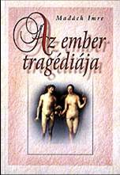

Az ember tragédiája
A műfaja drámai költemény vagy lírai dráma. Az elnevezés Shelley Megszabadított Prométheusz című művéből ered, s a szintagma egyszerre utal a romantika esztétikájának műfaji határokat lebontó törekvésére, valamint arra, hogy nem a külsődleges drámai akció a fontos, hanem a szereplőkben lejátszódó gondolatok kivetítése, azaz a műfajban minden a szereplőkben lejátszódó lírai folyamatoknak van alárendelve. Főszereplők:
Ádám igen rokonszenves számunkra. Mindig az igaz ügyért harcol. A vereség után van ereje az újrakezdéshez. A politikához nincs reális érzéke. Sokáig Lucifer befolyása alatt áll.
Lucifer a rosszat, a tagadást képviseli. Eszét rosszra használja. Ádámnak ellentéte, de kiegészítője is. Ellenszenves vonása, hogy az embert rabszolgájává akarja tenni. A végén vereséget szenved, amit az olvasó örömmel fogad.
Éva a jónak és a gonosznak a sajátos keveréke. Túlsúlyban a jó van. Kedves, jószívű és igazságos. Máskor viszont önző, kacér és pénzéhes. A legvégén válik egyértelműen rokonszenvessé, amikor megmenti Ádámot. Ő képviseli az érzelmet.